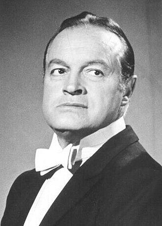

← All inducteesOn this page: Listen and watch Look closer
In March 1908 the Hope family crossed the Atlantic from England to Cleveland, Ohio. Among the seven sons was a four-year-old named Leslie Townes Hope.

Bob Hope
Bob Hope was born in a London suburb in 1903 and came to Cleveland as a boy of four. He became a United States citizen not by his own oath but through his father's, and grew into the entertainer most closely bound to the American military — the first civilian Congress ever named an honorary veteran of the armed forces.
The document behind this story
Honorary Award citation for Bob Hope, 38th Academy Awards — Academy of Motion Picture Arts and Sciences, 1966-04-18.
People often say Bob Hope "won five Oscars." The Academy's own record tells a more interesting story: his awards were honorary, not competitive. This is the citation read out when he received his second Honorary Award — the exact words the Academy used.
To Bob Hope for unique and distinguished service to our industry and the Academy.
The story
An English boy in Cleveland
Leslie Townes Hope was born on 29 May 1903 in Eltham, a suburb of London, the fifth of seven sons of the stonemason William Henry Hope and the singer Avis Townes Hope. In March 1908 the family emigrated to the United States and settled in Cleveland, Ohio, in the Doan's Corners neighbourhood. His father's first job there was carving stone for the Church of the Covenant, and he later worked on Cleveland's Guardians of Traffic.
The boy went to the Fairmount schools and East High, sang in the Church of the Covenant choir, took dancing lessons, and boxed briefly under the name "Packy East" before losing in a novice championship and giving it up.
Becoming "Bob"
Hope went into vaudeville in 1922, worked up through partner acts and Broadway revues, and in 1928 struck out as a solo comedian — changing his first name to "Bob." Broadway brought him Roberta and the 1936 Ziegfeld Follies; from 1938, radio brought him The Bob Hope Show on NBC.
Hollywood made him a star. After a 1934 short and The Big Broadcast of 1938, he teamed with Bing Crosby and Dorothy Lamour for the "Road" pictures, and from 1950 he was a fixture of American television, with specials running almost every year into the 1990s.
The soldier's comedian
In 1941 Hope entertained troops at an air base in California, joined the USO, and never really stopped. He took his radio show overseas in 1943, began his Christmas shows for the troops in 1948, and performed for American servicemen and women through the Korean War, Vietnam, and the Gulf War.
The country noticed. The armed forces named him an honorary "Four Star Hero" in 1992 and awarded him the Distinguished Service Medal in 1995, and in 1997 Congress made him the first civilian ever named an honorary veteran of the United States armed forces.
American by his father's oath
Hope never took a citizenship oath of his own. Under the law of the time, a child became a citizen automatically when a parent was naturalised — and so, as the record plainly states, "when his father was naturalized in December 1920, Hope became a United States citizen." He was seventeen. The boy who had crossed the Atlantic at four was made an American by an act in which he took no part.
It is a quiet but important point for a museum about immigration. Citizenship did not always arrive through a grand ceremony. Very often it arrived through a parent's paperwork — a form filed by someone else that changed a child's country without the child lifting a pen.
What the record shows, exactly
Hope's film honours are often inflated in the retelling, and a museum should be exact. The Academy of Motion Picture Arts and Sciences records three honours for him: an Honorary Award for 1952, the Jean Hersholt Humanitarian Award for 1959, and a second Honorary Award for 1965, presented in the spring of 1966. Two further honours — a special plaque and a life membership — are widely reported, but we could not confirm them in the Academy's own records. None of the confirmed honours is a competitive Academy Award. Hope was knighted by Britain in 1998, kept both of his countries close, and died at his home in California on 27 July 2003, at the age of one hundred.
The sources
Every fact on this page comes from one of these 5 items. Each links to the institution that holds it and gives that institution’s own rights wording.
-
Bob Hope
The anchor: the comedian at the height of his television years.
Rights, in the institution’s words: Commons record labels this image: Public domain.
-
reference entry
Hope, Leslie Townes (Bob)
Primary biographical source: born Eltham 29 May 1903; family emigrated to Cleveland in March 1908; “when his father was naturalized in December 1920, Hope became a United States citizen”; vaudeville from 1922; solo as “Bob” from 1928; radio, film and the USO; died 27 July 2003.
Rights, in the institution’s words: (not checked; cited only)
-
record
Honorary Award recipients
The Academy lists Bob Hope among recipients of the Honorary Award for 1952 and 1965, and of the Jean Hersholt Humanitarian Award for 1959. None is a competitive Academy Award.
Rights, in the institution’s words: (not checked; cited only)
-
award citation
Honorary Award citation for Bob Hope, 38th Academy Awards
The exact citation for Hope’s second Honorary Award: “To Bob Hope for unique and distinguished service to our industry and the Academy,” presented by Jack Lemmon on 18 April 1966.
Rights, in the institution’s words: (not checked; cited only)
-
reference entry
Bob Hope and American Variety
The Library of Congress holds the Bob Hope Collection and mounted the exhibition “Bob Hope and American Variety”; context for his vaudeville, radio, film and troop-entertainment career.
Rights, in the institution’s words: (not checked; cited only)
Questions to talk about
- Bob Hope became a citizen through his father's naturalisation, without any act of his own. Does citizenship that arrives this way mean something different from citizenship a person chooses as an adult?
- Hope was born in England and knighted by Britain, yet he became a symbol of American patriotism. Can a person belong deeply to the country they left as well as the one they joined?
- For decades Hope entertained troops far from home. Why might a performer who was himself an immigrant feel so tied to the armed forces of his adopted country?
- People remember Hope as a five-time Oscar winner, though his awards were honorary. How do legends like this grow, and why does getting the record right still matter?
- Hope's father came to carve stone and ended up shaping a city's buildings. How does the work the first generation does shape what the next generation is free to become?
Things to try
- Check a famous claim. Many sources say Bob Hope "won an Academy Award five times." Using only what this page cites, work out what is actually documented and what is not, and write one sentence stating the honours that can be confirmed.
- Trace a derivative citizenship. Under older U.S. law a child became a citizen when a parent naturalised. Find out whether anyone in your own family became a citizen through someone else's papers, or imagine how you would discover it. What record would you need to look at, and where would it be kept?
Listen and watch
Hear this story in two minutes, or one
AI narration · synthetic voice · not the voice of Bob Hope
Every sentence you will hear comes from this page, and the transcripts below link each one to the passage it comes from. Quotations are read by the same synthetic voice and are marked as quotations.
Audio guide 1:46
Short 0:50
Video short, with captions 0:53
Read the transcript of the audio guide
- In March 1908 the Hope family crossed the Atlantic from England to Cleveland, Ohio. source
- Among the seven sons was a four-year-old named Leslie Townes Hope. source
- His father's first job there was carving stone for the Church of the Covenant, and he later worked on Cleveland's Guardians of Traffic. source
- The boy went to the Fairmount schools and East High, sang in the Church of the Covenant choir, took dancing lessons, and boxed briefly under the name "Packy East" before losing in a novice championship and giving it up. source
- Hope went into vaudeville in 1922, worked up through partner acts and Broadway revues, and in 1928 struck out as a solo comedian — changing his first name to "Bob." source
- Hollywood made him a star. source
- He took his radio show overseas in 1943, began his Christmas shows for the troops in 1948, and performed for American servicemen and women through the Korean War, Vietnam, and the Gulf War. source
- In 1997 Congress made him the first civilian ever named an honorary veteran of the United States armed forces. source
- Hope never took a citizenship oath of his own. source
- Under the law of the time, a child became a citizen automatically when a parent was naturalised. source
- As the record plainly states: source
When his father was naturalized in December 1920, Hope became a United States citizen.
- He was seventeen. source
- The boy who had crossed the Atlantic at four was made an American by an act in which he took no part. source
- This is the citation read out when he received his second Honorary Award: source
To Bob Hope for unique and distinguished service to our industry and the Academy.
source- Is a citizen made by a ceremony, or by the life a person lives in a country?
Read the transcript of the short and the video
- In March 1908 the Hope family crossed the Atlantic from England to Cleveland, Ohio. source
- Among the seven sons was a four-year-old named Leslie Townes Hope. source
- Hope went into vaudeville in 1922, worked up through partner acts and Broadway revues, and in 1928 struck out as a solo comedian — changing his first name to "Bob." source
- He took his radio show overseas in 1943, began his Christmas shows for the troops in 1948, and performed for American servicemen and women through the Korean War, Vietnam, and the Gulf War. source
- Hope never took a citizenship oath of his own. source
- The boy who had crossed the Atlantic at four was made an American by an act in which he took no part. source
- Read the full story, with every source, on this page.
Images in the video: NBC Television. Publicity photograph via Wikimedia Commons..
Voice: Piper text-to-speech, LibriTTS voice, trained on the LibriTTS corpus of LibriVox audiobook recordings (Zen et al., 2019; CC BY 4.0). The voice is one of 904 reader voices in that collection, each identified only by a number; nothing here imitates Bob Hope. A script checks every sentence against this page before any audio is made; a person on the museum’s team should still listen before it is published.
Look closer
Public Law 105-67, making Bob Hope an honorary veteran, 30 October 1997
Select a number on the document, or read the notes below it. Annotations drafted with AI and checked against the sources listed.


Public Law 105-67, 111 Stat. 1452 (1997). U.S. Government Publishing Office. Rights, in the source’s own words: “Copyright protection under this title is not available for any work of the United States Government” (source).
-
1 A joint resolution
Public Law 105–67 of the 105th Congress: a joint resolution to confer status as an honorary veteran of the United States Armed Forces on Leslie Townes (Bob) Hope.
Source
- “Public Law 105–67 105th Congress Joint Resolution” — the document itself
- “To confer status as an honorary veteran of the United States Armed Forces on Leslie Townes (Bob) Hope.” — the document itself
-
2 The first
The United States had never before given this status to anyone. Hope was the first.
Source
- “Whereas the United States has never before conferred status as an honorary veteran of the United States Armed Forces on an individual” — the document itself
- “Leslie Townes (Bob) Hope” — the document itself
-
3 Not a veteran
Hope was not a veteran himself. He tried to enlist during World War II and was told he could serve the nation best as a civilian entertainer for the troops.
Source
- “Whereas Leslie Townes (Bob) Hope is himself not a veteran, having attempted to enlist in the Armed Forces to serve his country during World War II, but being informed that the greatest service he could provide the Nation was as a civilian entertainer for the troops;” — the document itself
-
4 Half a century of tours
Through World War II, Korea, Vietnam, the Persian Gulf War and the Cold War he travelled to entertain millions of servicemembers. He had first crossed the Atlantic from England to Cleveland as a boy of four.
Source
- “Whereas during, World War II, the Korean Conflict, the Vietnam War, and the Persian Gulf War and throughout the Cold War, Bob Hope traveled to visit and entertain millions of United States servicemembers” — the document itself
- “the Hope family crossed the Atlantic from England to Cleveland” — this inductee’s profile
- “came to Cleveland as a boy of four” — this inductee’s profile
-
5 His honours
Congress listed his honours: the Congressional Gold Medal, the Presidential Medal of Freedom, the Distinguished Service Medal of each of the armed forces, and more than 100 other citations and awards.
Source
- “Whereas Bob Hope has been awarded the Congressional Gold Medal, the Presidential Medal of Freedom, the Distinguished Service Medal of each of the branches of the Armed Forces, and more than 100 citations and awards” — the document itself
-
6 How it became law
The House passed it on June 3, the Senate on Sept. 9, and it was approved on October 30, 1997.
Source
- “June 3, considered and passed House.” — the document itself
- “Sept. 9, considered and passed Senate.” — the document itself
- “Approved October 30, 1997.” — the document itself
Can you spot it? Both houses of Congress had to pass this. Find the line that says when the Senate passed it.
Sept. 9, considered and passed Senate, near the bottom. Show me on the document
Read the full transcription
Text from the official PDF's text layer, checked against the page image. Line breaks inside paragraphs are joined.
[Seal printed on the PDF: AUTHENTICATED U.S. GOVERNMENT INFORMATION GPO]
111 STAT. 1452
PUBLIC LAW 105–67—OCT. 30, 1997
Public Law 105–67
105th Congress
Joint Resolution
Oct. 30, 1997
[H.J. Res. 75]
To confer status as an honorary veteran of the United States Armed Forces on Leslie Townes (Bob) Hope.
Whereas the United States has never before conferred status as an honorary veteran of the United States Armed Forces on an individual, and such status is and should remain an extraordinary honor not lightly conferred nor frequently granted;
Whereas the lifetime of accomplishments and service of Leslie Townes (Bob) Hope on behalf of United States military servicemembers fully justifies the conferring of such status;
Whereas Leslie Townes (Bob) Hope is himself not a veteran, having attempted to enlist in the Armed Forces to serve his country during World War II, but being informed that the greatest service he could provide the Nation was as a civilian entertainer for the troops;
Whereas during, World War II, the Korean Conflict, the Vietnam War, and the Persian Gulf War and throughout the Cold War, Bob Hope traveled to visit and entertain millions of United States servicemembers in numerous countries, on ships at sea, and in combat zones ashore;
Whereas Bob Hope has been awarded the Congressional Gold Medal, the Presidential Medal of Freedom, the Distinguished Service Medal of each of the branches of the Armed Forces, and more than 100 citations and awards from national veterans service organizations and civic and humanitarian organizations; and
Whereas Bob Hope has given unselfishly of his time for over a half century to be with United States servicemembers on foreign shores, working tirelessly to bring a spirit of humor and cheer to millions of servicemembers during their loneliest moments, and thereby extending for the American people a touch of home away from home: Now, therefore, be it
Resolved by the Senate and House of Representatives of the United States of America in Congress assembled, That Congress—
(1) extends its gratitude, on behalf of the American people, to Leslie Townes (Bob) Hope for his lifetime of accomplishments and service on behalf of United States military servicemembers; and
(2) confers upon Leslie Townes (Bob) Hope the status of an honorary veteran of the United States Armed Forces.
Approved October 30, 1997.
LEGISLATIVE HISTORY—H.J. Res. 75:
HOUSE REPORTS: No. 105–109 (Comm. on Veterans’ Affairs).
CONGRESSIONAL RECORD, Vol. 143 (1997):
June 3, considered and passed House.
Sept. 9, considered and passed Senate.
WEEKLY COMPILATION OF PRESIDENTIAL DOCUMENTS, Vol. 33 (1997):
Oct. 30, Presidential statement.
Interviews and media from other institutions
First-person recordings and expert perspectives held by other museums, archives and media organisations. Each one links to the institution that holds it. A recording is embedded here only when its holder has given permission.
-
Audio
Recording of The Pepsodent Show, February 3, 1948 (Bob Hope Collection)
Library of Congress, Motion Picture, Broadcasting and Recorded Sound Division · 1948-02-03
A 1948 broadcast of Bob Hope's radio show, from the Library of Congress's Bob Hope Collection.
Link only: the recording stays with Library of Congress, Motion Picture, Broadcasting and Recorded Sound Division. View at Library of Congress, Motion Picture, Broadcasting and Recorded Sound Division